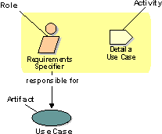

|
A role is an
abstract definition of a set of activities
performed and artifacts owned.
Roles are typically realized
by an individual, or a set of individuals, working together as a team.
A project team member
typically fulfills many different roles.
Roles are not individuals;
instead, they describe how individuals behave in the business and
what responsibilities these individuals have.
While most roles are realized
by people within the organization, people outside of the development
organization play an important role: for example, that of the stakeholder
of the project or product being developed. |

A role, and its
activities and artifacts
Roles have a set of
cohesive activities that they perform. These activities are closely related
and functionally coupled, and are best performed by the same individual.
Activities are closely
related to artifacts. Artifacts provide the input and
output for the activities, and the mechanism by which information is
communicated between activities. |
Role Sets
|
 Roles and Activities
Roles and Activities